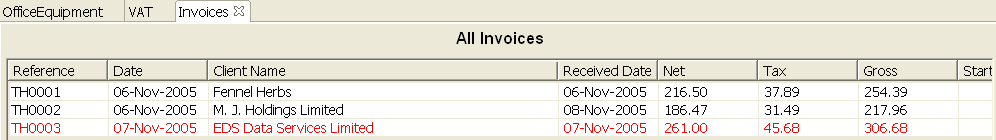
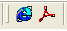

Invoices
This section allows you to list and control the invoices you issue to your
clients. Invoices which have not been paid will be marked in red.

You can create a new invoice from scratch by clicking on the Invoices node
in you Book Explorer using the right mouse button to bring up the menu
A new empty invoice tab will be created for you using the next available
invoice number. The application will automatically detect your naming scheme
to derive the next invoice number. For example, if you call your first invoice
COOL001, the application will return COOL002 as the next invoice number,
although you can always override this if you want to.
A more powerful feature is the cloning of an existing invoice, using it as
the template.
This feature is useful for businesses with repetitive periodic invoice,
where only the dates and the hours change. The newly created invoice will have
the dates automatically adjusted for the new period by deriving from the
relative differences between the dates in the template invoice. For example,
if your template invoice has an invoice date of 4th November, a receipt date
of 11th November, and the start date of 24th October, end date of 28th
October, then let's say you want the invoice date of your new invoice to be
18th November, then the application be automatically set the receipt date to
25th November, the start date to 7th November and the end date to 11th
November.
Click
for a
typical screen for an invoice. You can display this screen by selecting on the
"Show details..." option on the menu above, or by clicking on the invoice
itself in the Book Explorer tree.
The list of invoices can be sorted by clicking on certain column header for
the list. This should be familiar to Excel users. The column used for sorting
will have the down arrow displayed against it

When an invoice is paid i.e. when the fund is credited into your account,
you can use the invoice to generate an entry in your Entry account by
selecting the "Mark as paid" option on the context menu (which can be
activated by clicking on the invoice entry with your right mouse button), or
you can force update the entry at any time using the option "Update/generate
Ledger entries".
Ad hoc reporting applies to this screen. You can create an ad hoc report by
selecting a number of invoices (click on the first invoice, then click on all
the other invoice while holding down either the shift or control key), then
click on the "Generate HTML" or "Generate PDF"
 button on
the toolbar.
|